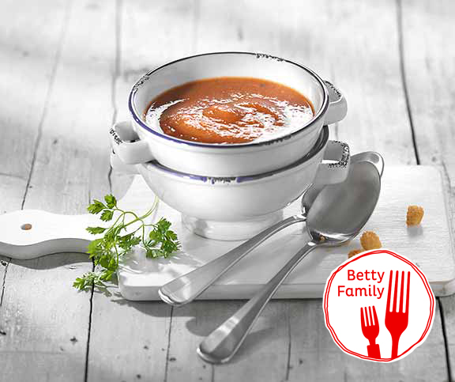

Sommer-Gazpacho

Description
Schneller geht es gar nicht, eine kalte Suppe zuzubereiten: Küchenmaschine Bosch Mum 5 sei Dank!
Ingredients
- ote Peperoni
- Gurke
- Fleischtomaten
- ...
Steps
- Peperoni in Stücke schneiden, entkernen, in Stücke schneiden
- Gurke längs halbieren
- Tomaten, Zwiebel und Knoblauch in Stücke schneiden.
- ...